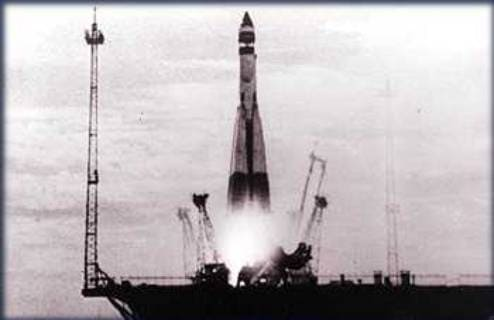
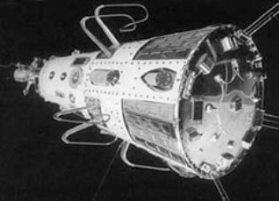
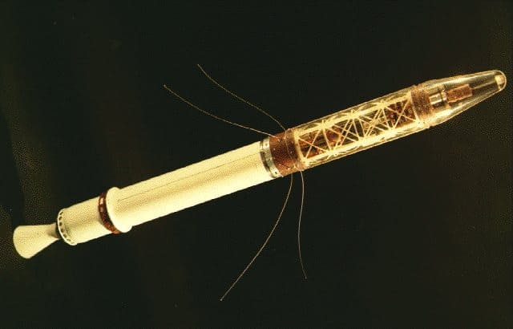

Contexte
L'histoire a changée le 4 octobre 1957, lorsque l'Union Soviétique lance avec succès Spoutnik I. Premier satellite artificiel au monde, il faisait la taille d'un ballon de plage et ne pesait qu'environ 83 kg. Il prenait 98 minutes pour orbiter autour de la Terre sur son chemin elliptique. Ce lancement a ouvert la voie à de nouvaux développements dans les domaines politiques, militaires, technologiques et scientifiques. Alors que le lancement de Spoutnik n'était qu'un évènement isolé, il marquait le début de l'ère spatiale et de la course à l'espace de l'URSS. L’histoire débute en 1952, lorsque le Conseil international des unions scientifiques a décidé d’établir l’Année géophysique internationale (IGY) du 1er juillet 1957 au 31 décembre 1958, sachant que les scientifiques savaient que les cycles de l’activité solaire seraient très élevés. En octobre 1954, le conseil adopta une résolution demandant que des satellites artificiels soient lancés au cours de l'AGJ pour cartographier la surface de la Terre.
Lancement
Le lancement de Spoutnik a tout changé. Spoutnik a attiré l'attention du monde et les américains. Sa taille était plus impressionnante que celle de Vanguard (Spoutnik I). De plus, le public craignait que la capacité des Soviétiques à lancer des satellites se traduise également par la capacité de lancer des missiles balistiques pouvant transporter des armes nucléaires de l’Europe aux États-Unis. Les Soviétiques ont de nouveau frappé : Le 3 novembre, Spoutnik II a été lancé avec une charge beaucoup plus lourde.
La réponse des Etats-Unis
Immédiatement après le lancement de Spoutnik I en octobre, le Département de la Défense des États-Unis a réagi à la fureur politique en approuvant le financement d’un autre projet de satellite aux États-Unis. Comme alternative à Vanguard, ils ont commencé à travailler sur le projet Explorer I. Le 31 janvier 1958, la roue a tournée lorsque les États-Unis ont lancé avec succès Explorer I. Ce satellite transportait une petite charge utile scientifique qui a finalement permis de découvrir les ceintures de radiations magnétiques autour de la Terre. Le programme Explorer s'est poursuivi sous la forme d'une série réussie d'engins spatiaux légers et scientifiquement utiles.
Le lancement de Spoutnik a également conduit directement à la création de la NASA (National Aeronautics and Space Administration). En juillet 1958, le Congrès a adopté la loi sur l'aéronautique et l'espace (communément appelée "loi sur l'espace"), qui a créé la NASA le 1er octobre 1958 à partir du Comité consultatif national de l'aéronautique (NACA) et d'autres organismes gouvernementaux.